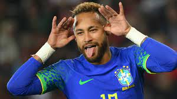
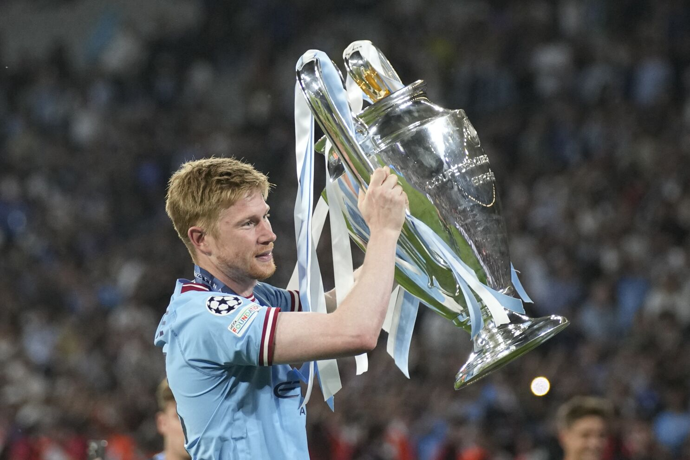

Football

Messi
Messi's fullname is Lionel Andrés Messi.He born in 24 June 1987, also known as Leo Messi, is an Argentine professional footballer who plays as a forward for and captains the Argentina national team. Widely regarded as one of the greatest players of all time, Messi has won a record seven Ballon d'Or awards and a record six European Golden Shoes, and in 2020 he was named to the Ballon d'Or Dream Team. Until leaving the club in 2021, he had spent his entire professional career with Barcelona, where he won a club-record 34 trophies, including ten La Liga titles, seven Copa del Rey titles and the UEFA Champions League four times.With his country, he won the 2021 Copa América and the 2022 FIFA World Cup. A prolific goalscorer and creative playmaker, Messi holds the records for most goals in La Liga (474), most hat-tricks in La Liga (36) and the UEFA Champions League (eight), and most assists in La Liga (192) and the Copa América (17). He also has the most international goals by a South American male (103). Messi has scored over 800 senior career goals for club and country, and has the most goals by a player for a single club (672).Read more...

Ronaldo
Cristiano Ronaldo dos Santos Aveiro born 5 February 1985.He is a Portuguese professional footballer who plays as a forward for and captains both Saudi Professional League club Al Nassr and the Portugal national team. Widely regarded as one of the greatest players of all time, Ronaldo has won five Ballon d'Or awards and four European Golden Shoes, the most by a European player. He has won 32 trophies in his career, including seven league titles, five UEFA Champions Leagues, the UEFA European Championship and the UEFA Nations League. Ronaldo holds the records for most appearances (183), goals (140) and assists (42) in the Champions League, goals in the European Championship (14), international goals (123) and international appearances (200). He is one of the few players to have made over 1,100 professional career appearances, and has scored over 800 official senior career goals for club and country, making him the highest goal-scorer of all time according to the IFFHS. He is the only player to score in five different FIFA World Cup tournaments.Read more...

Neymar Jr.
Neymar da Silva Santos Júnior (born 5 February 1992), known as Neymar Júnior or mononymously as Neymar, is a Brazilian professional footballer who plays as a forward for Ligue 1 club Paris Saint-Germain and the Brazil national team. A prolific goalscorer and renowned playmaker, he is widely regarded as one of the best players in the world as well as one of the greatest Brazilian footballers of all time.Neymar was twice named the South American Footballer of the Year, in 2011 and 2012, and soon relocated to Europe to join Barcelona. As part of Barcelona's attacking trio with Lionel Messi and Luis Suárez, dubbed MSN, he won the continental treble of La Liga, the Copa del Rey, and the UEFA Champions League. He then attained a domestic double in the 2015–16 season. Motivated to be a talisman at club level, Neymar transferred to PSG in 2017 in a move worth €222 million, making him the most expensive player ever.In France, he won five league titles, among other honours, and was voted Ligue 1 Player of the Year in his debut season.Notably, he helped PSG attain a domestic quadruple in the 2019–20 season, and led the club to its first ever Champions League final.Read more...

De Bruyne
Kevin De Bruyne (born 28 June 1991) is a Belgian professional footballer who plays as a midfielder and captains for Premier League club Manchester City and captains the Belgium national team. He is widely regarded as one of the best players of his generation as well as one of the best midfielders in the world. Pundits often describe him as a complete footballer.De Bruyne began his career at Genk, where he was a regular player when they won the 2010–11 Belgian Pro League. In 2012 he joined English club Chelsea, where he was used sparingly and then loaned to Werder Bremen. He signed with Wolfsburg for £18 million in 2014, where he established himself as one of the best players in the Bundesliga and was integral in the club's 2014–15 DFB-Pokal win. In the summer of 2015 De Bruyne joined Manchester City for a club record £54 million. He has since won the UEFA Champions League, five Premier League titles, five League Cups and two FA Cups with the club. In 2017–18 he had a significant role in Manchester City's record in becoming the only Premier League team to attain 100 points in a single season. In 2019–20, De Bruyne equalled the record for most assists in a Premier League season and was awarded Player of the Season (which he won again in 2021–22). He was again heavily involved in 2022–23 as City sealed their first continental treble.Read more...